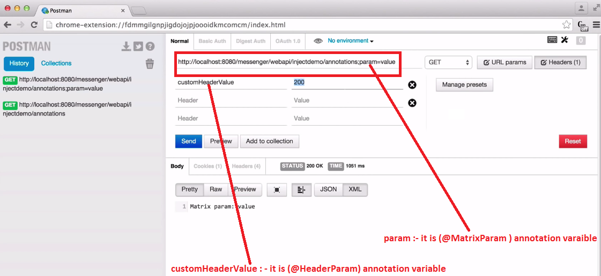

RESTful Web Services
REST stands for REpresentational State Transfer.
REST is an architectural style not a protocol.
Advantages of RESTful Web Services
Fast: RESTful Web Services are fast because there is no strict specification like SOAP. It consumes less bandwidth and resource.
Language and Platform independent: RESTful web services can be written in any programming language and executed in any platform.
Can use SOAP: RESTful web services can use SOAP web services as the implementation.
Permits different data format: RESTful web service permits different data format such as Plain Text, HTML, XML and JSON.
RESTful Web Services are REST architecture based web services.
In REST Architecture everything is a resource. RESTful web services are light weight,
highly scalable and maintainable and are very commonly used to create APIs for web based applications.
A web service is a collection of open protocols and standards used for exchanging data between applications or systems.
HTTP Methods
Following well known HTTP methods are commonly used in REST based architecture.
GET - Provides a read only access to a resource.
PUT - Used to create a new resource.
DELETE - Used to remove a resource.
POST - Used to update a existing resource or create a new resource.
OPTIONS - Used to get the supported operations on a resource
with Jersey Framework to create RESTful Web Services. Jersey framework implements JAX-RS 2.0 API,
which is standard specification to create RESTful web services.
Download the latest version of Jersey framework binaries from https://jersey.java.net/download.html.at c: colon.
You will find all the Jersey libraries in the directories C:\jaxrs-ri-2.17\jaxrs-ri\lib and dependencies in
C:\jaxrs-ri-2.17\jaxrs-ri\ext. Make sure you set your CLASSPATH variable on this directory properly otherwise
you will face problem while running your application.
Add Required Libraries in REST Project in :\WEB-INF\lib folder.
1. \jaxrs-ri-2.17\jaxrs-ri\api
2. \jaxrs-ri-2.17\jaxrs-ri\ext
3. \jaxrs-ri-2.17\jaxrs-ri\lib
What is a Resource?
REST architecture treats every content as a resource. These resources can be text files,
html pages, images, videos or dynamic business data. REST Server simply provides access to
resources and REST client accesses and modifies the resources.
Here each resource is identified by URIs/ global IDs. REST uses various representations to
represent a resource where text,
JSON, XML. XML and JSON are the most popular representations of resources.
RESTful Web Services - Messages
RESTful web services make use of HTTP protocol as a medium of communication between client and server.
A client sends a message in form of a HTTP Request and server responds in form of a HTTP Response.
This technique is termed as Messaging. These messages contain message data and metadata.
A HTTP Request has five major parts:
Verb- Indicate HTTP methods such as GET, POST, DELETE, PUT etc.
URI- Uniform Resource Identifier (URI) to identify the resource on server
HTTP Version- Indicate HTTP version, for example HTTP v1.1 .
Request Header- Contains metadata for the HTTP Request message as key-value pairs.
For example, client ( or browser) type, format supported by client,
format of message body, cache settings etc.
Request Body- Message content or Resource representation.
A HTTP Response has four major parts:
Status/Response Code- Indicate Server status for the requested resource.
For example 404 means resource not found and 200 means response is ok.
HTTP Version- Indicate HTTP version, for example HTTP v1.1 .
Response Header- Contains metadata for the HTTP Response message as key-value pairs.
For example, content length, content type, response date, server type etc.
Response Body- Response message content or Resource representation
RESTful Web Services - Addressing
Addressing refers to locating a resource or multiple resources lying on the server.
It is analogous to locate a postal address of a person.
Each resource in REST architecture is identified by its URI, Uniform Resource Identifier.
Example :- URI is http://localhost:8080/UserManagement/rest/UserService/users
RESTful Web Services - Methods
1. GET operations are read only and are safe.
2. PUT and DELETE operations are idempotent means their result will always same no matter how many times
these operations are invoked.
3. PUT and POST operation are nearly same with the difference lying only in the result where PUT operation
is idempotent and POST operation can cause different result.
RESTful Web Services - Statelessness
As per REST architecture, a RESTful web service should not keep a client state on server.
This restriction is called statelessness. It is responsibility of the client to pass its context to server
and then server can store this context to process client's further request.
Advantages of Statelessness
1. Web services can treat each method request independently.
2. Web services need not to maintain client's previous interactions. It simplifies application design.
3. As HTTP is itself a statelessness protocol, RESTful Web services work seamlessly with HTTP protocol.
Disadvantages of Statelessness
1. Web services need to get extra information in each request and then interpret to get the client's state
in case client interactions are to be taken care of.
RESTful Web Services - Caching
Caching refers to storing server response in client itself so that a client needs not to make server request
for same resource again and again. A server response should have information about how a caching is to be done
so that a client caches response for a period of time or never caches the server response.
Following are the headers which a server response can have in order to configure a client's caching:
1 Date : - Date and Time of the resource when it was created.
2 Last Modified : - Date and Time of the resource when it was last modified.
3 Cache-Control : - Primary header to control caching.
4 Expires : - Expiration date and time of caching
5 Age : - Duration in seconds from when resource was fetched from the server.
Cache-Control Header
1 Public : - Indicates that resource is cachable by any component.
2 Private : - Indicates that resource is cachable by only client and server,
no intermediary can cache the resource.
3 no-cache/no-store : - Indicates that resource is not cachable
4 max-age : - Indicates the caching is valid up to max-age in seconds. After this,
client has to make another request.
5 must-revalidate : - Indication to server to revalidate resource if max-age has passed.
RESTful Web Services - Security
Validation - Validate all inputs on the server. Protect your server against SQL or NoSQL injection attacks.
Session based authentication - Use session based authentication to authenticate a user whenever a request is made to a Web Service method.
No sensitive data in URL - Never use username, password or session token in URL , these values should be passed to Web Service via POST method.
Restriction on Method execution - Allow restricted use of methods like GET, POST, DELETE. GET method should not be able to delete data.
Validate Malformed XML/JSON - Check for well formed input passed to a web service method.
Throw generic Error Messages - A web service method should use HTTP error messages like 403 to show access forbidden etc.
HTTP Code: It gives response code.
200 : - OK, shows success.
201 : - CREATED, when a resource is successful created using POST or PUT request.
Return link to newly created resource using location header.
204 : - NO CONTENT, when response body is empty for example, a DELETE request.
304 : - NOT MODIFIED, used to reduce network bandwidth usage in case of conditional GET requests.
Response body should be empty. Headers should have date, location etc.
400 : - BAD REQUEST, states that invalid input is provided e.g. validation error, missing data.
401 : - UNAUTHORIZED, states that user is using invalid or wrong authentication token.
403 : - FORBIDDEN, states that user is not having access to method being used for example,
delete access without admin rights.
404 : - NOT FOUND, states that method is not available.
409 : - CONFLICT, states conflict situation while executing the method for example, adding duplicate entry.
500 : - INTERNAL SERVER ERROR, states that server has thrown some exception while executing the method.
RESTful Web Services - Java (JAX-RS)
JAX-RS stands for JAVA API for RESTful Web Services. JAX-RS is a JAVA based programming language API
and specification to provide support for created RESTful Webservices.
Following are the commonly used annotations to map a resource as a web service resource.
@Path : - Relative path of the resource class/method.
@GET : - HTTP GET request, used to fetch resource.
@PUT : - HTTP PUT request, used to create resource.
@POST : - HTTP POST request, used to create/update resource.
@DELETE : - HTTP DELETE request, used to delete resource.
@HEAD : - HTTP HEAD request, used to get status of method availability.
@Produces : - States the HTTP Response generated by web service, for example APPLICATION/XML,
TEXT/HTML, APPLICATION/JSON etc.
@Consumes : - States the HTTP Request type, for example application/x-www-form-urlencoded
to accept form data in HTTP body during POST request.
@SingleTon : - It makes, the request Singleton. so for every request it will never referesh the request.
@PathParam : - Binds the parameter passed to method to a value in path.
@QueryParam : - Binds the parameter passed to method to a query parameter in path.
@MatrixParam : - Binds the parameter passed to method to a HTTP matrix parameter in path.
@HeaderParam : - Binds the parameter passed to method to a HTTP header.
@CookieParam : - Binds the parameter passed to method to a Cookie.
@FormParam : - Binds the parameter passed to method to a form value.
@DefaultValue : - Assigns a default value to a parameter passed to method.
@Context : - Context of the resource for example HTTPRequest as a context.
package org.chpl.messanger; import javax.ws.rs.Path; @Path ("/messages") public class MessageResource { @GET @Produces ("MediaType.TEXT_PLAIN") public String getMessage() { return "Hello World"; } }
package org.chpl.messanger.model; import javax.xml.bind.annotation.XmlRootElement; @XmlRootElement import java.util.Date; public class Message { private long Id; private String message; private Date created; private String author; public Message() { } public Message(long id, String message, String author) { super(); Id = id; this.message = message; this.created = new Date(); this.author = author; } public long getId() { return Id; } public void setId(long id) { Id = id; } public String getMessage() { return message; } public void setMessage(String message) { this.message = message; } public Date getCreated() { return created; } public void setCreated(Date created) { this.created = created; } public String getAuthor() { return author; } public void setAuthor(String author) { this.author = author; } }
package org.chpl.messanger.service; import java.util.ArrayList; import java.util.List; public class MessageService { public List<Message> getAllMessage() { Message m1=new Message(1L,"Hello Java","Mayuresh"); Message m2=new Message(2L,"Hello Java","Ashutosh"); List<Message> list=new ArrayList<Message>(); list.add(m1); list.add(m2); return list; } }
package org.chpl.messanger; import javax.ws.rs.Path; import java.util.ArrayList; import java.util.List; @Path ("/messages") public class MessageResource { MessageService messageService= new MessageService(); @GET @Produces ("MediaType.APPLICATION_XML") public List<Message> getMessage() { return messageService.getAllMessage(); } }
package org.chpl.messanger.model; import javax.xml.bind.annotation.XmlRootElement; @XmlRootElement import java.util.Date; public class Profile { private long Id; private String profileName; private String firstName; private String lastName; private String fullName; private Date created; public Profile() { } public Profile(long id, String profileName, String firstName) { super(); Id = id; this.profileName = profileName; this.created = new Date(); this.firstName = firstName; this.lastName = lastName; } public long getId() { return Id; } public void setId(long id) { Id = id; } public String getProfileName() { return profileName; } public void setProfileName(String profileName) { this.profileName = profileName; } public Date getCreated() { return created; } public void setCreated(Date created) { this.created = created; } public String getFirstName() { return firstName; } public void setFirstName(String firstName) { this.firstName = firstName; } public String getLastName() { return lastName; } public void setLastName(String lastName) { this.lastName = lastName; } @XmlTransient public String getFullName() { return fullName; } public void setFullName(String fullName) { this.fullName = fullName; }}@XmlTransient
This @XmlTransient annotation useful , when you want to block , while generating (XML/JSON) Response. Using @XmlTransient annotation , we can skip information, while generating (XML/JSON) Response. We have set @XmlTransient annotation forgetFullName()
method , so while generating (XML/JSON) Response, The fullName will be skippd.
package org.chpl.messanger; import java.util.HashMap; import java.util.Map; public class DatabaseClass { public static Map<Long,Message> messages= new HashMapMap<Long,Message>(); public static Map<String,Profile> profiles= new HashMapMap<String,Profile>(); public static Map<Long,Message> getMessages() { return messages; } public static Map<String,Profile> getProfiles() { return profiles; } }
package org.chpl.messanger.service; import java.util.ArrayList; import java.util.List; public class MessageService { private Map<Long,Message> messages= DatabaseClass.getMessages(); private Map<String,Profile> profiles= DatabaseClass.getProfiles(); public MessageService() { messages.put(Ll, newMessage(1,"Hello Java","Mayuresh")); messages.put(L2, newMessage(2,"Hello Java","Ashutosh")); } public List<Message> getAllMessage() { returnnew ArrayList<message>(messages.values()); }Handling Exceptions
public Message getMessage(Long id) { Message message= messages.get(id); if (message== null) { throw new DataNotFoundException("Message with id "+ id + " not found"); } return message; }public Message addMessage(Message message) { message.setId(messages.size()+1); messages.put(message.getId(),message); return message; } public Message updateMessage(Message message) { if(message.getId()>=0 ){ return null; } messages.put(message.getId(),message); return message; } public Message removeMessage(ling id) { return messages.remove(id); } }
package org.chpl.messanger.service; import java.util.ArrayList; import java.util.List; public class ProfileService { private Map<String,Profile> profiles= DatabaseClass.getProfiles(); public ProfileService() { profiles.put("Mayuresh", newProfile(1L,"Mayuresh","Ratnaparkhi")); profiles.put("Ashutosh" newProfile(2L,"Ashutosh","Ratnaparkhi")); } public List<Profile> getAllProfile() { returnnew ArrayList<Profile>(profiles.values()); } public Profile getProfile(Long id) { return profiles.get(id); } public Profile addProfile(Profile profile) { profile.setId(profiles.size()+1); profiles.put(profile.getProfileName(),profile); return profile; } public Profile updateProfile(Profile profile) { if(profile.getProfileName().isEmpty() ){ return null; } profiles.put(profile.getProfileName(),profile); return profile; } public Profile removeProfile(String profileName) { return profiles.remove(profileName); } }
import javax.ws.rs.QueryParam; public class MessageFilterBean { private @QueryParam("year") int year; private @QueryParam("start") int start; private @QueryParam("size") int size; public int getYear() { return year; } public void setYear(int year) { year = year; } public int getStart() { return start; } public void setStart(int start) { start = start; } public int getSize() { return size; } public void setSize(int size) { size = size; } }
import javax.ws.rs.GET; import javax.ws.rs.Path; import javax.ws.rs.PathParam; @Path ("/") @Consumes (value={"MediaType.APPLICATION_XML","MediaType.APPLICATION_JSON"}) @Produces (value={"MediaType.APPLICATION_XML","MediaType.APPLICATION_JSON"}) public class ChildResource { @GET public String getParentReference() { return " This is Child Resource "; } @GET @Path ("/commentId") public String getParamsUsingParentReference(@PathParam("messageId") long msgId, @PathParam("commentId") long commentId) { return " Message ID : "+msgId+ " Comment ID : "+commentId; } }
package org.chpl.messanger; import javax.ws.rs.PUT; import javax.ws.rs.POST; import javax.ws.rs.DELETE; import javax.ws.rs.GET; import javax.ws.rs.PathParam; import javax.ws.rs.QueryParam; import javax.ws.rs.MatrixParam; import javax.ws.rs.HeaderParam; import javax.ws.rs.CookieParam; import javax.ws.rs.Produces; import javax.ws.rs.Consumes; import javax.ws.rs.core.MediaType; import javax.ws.rs.core.Context; import javax.ws.rs.core.UriInfo; import javax.ws.rs.core.HttpHeaders; import javax.ws.rs.core.Response; import javax.ws.rs.Path; import java.util.ArrayList; import java.util.List; @Path ("/messages") public class MessageResource { MessageService messageService= new MessageService(); @GET @Produces (value={"MediaType.APPLICATION_XML","MediaType.APPLICATION_JSON"}) public List<Message> getMessage(@QueryParam("year") int year, @QueryParam("start") int start, @QueryParam("size") int size) { if (year>0) { return messageService.getAllMessagesForYear(year); } if (start>=0 && size>=0) { return messageService.getAllMessagesPaginaged(start,size); } return messageService.getAllMessage(); }Here Accessing Child Resource ( ChildResource class) From Parent ( MessageResource class)
@Path ("/{messageId}/comments") public ChildResource getChildResourceReference() { return new ChildResource(); }@GET @Produces (value={"MediaType.APPLICATION_XML","MediaType.APPLICATION_JSON"}) public List<Message> getMessageUsingBeanParam(@BeanParam MessageFilterBean bean) { bean.getYear() if (bean.getYear()>0) { return messageService.getAllMessagesForYear(bean.getYear()); } if (bean.getStart()>=0 && bean.getSize()>=0) { return messageService.getAllMessagesPaginaged(bean.getStart(),bean.getSize()); } return messageService.getAllMessage(); }@GET @Path ("/{messageId}") @Produces (value={"MediaType.APPLICATION_XML","MediaType.APPLICATION_JSON"}) public Message getMessage(@PathParam("messageId") long id ) { return messageService.getMessage(id); } @POST @Consumes (value={"MediaType.APPLICATION_XML","MediaType.APPLICATION_JSON"}) @Produces (value={"MediaType.APPLICATION_XML","MediaType.APPLICATION_JSON"}) public Message addMessage(Message message) { return messageService.addMessage(message); }@PUT @Path ("/{messageId}") @Consumes (value={"MediaType.APPLICATION_XML","MediaType.APPLICATION_JSON"}) @Produces (value={"MediaType.APPLICATION_XML","MediaType.APPLICATION_JSON"}) public Message updateMessage(@PathParam("messageId") long id , Message message) { message.setId(id); return messageService.updateMessage(message); } @DELETE @Path ("/{messageId}") @Produces (value={"MediaType.APPLICATION_XML","MediaType.APPLICATION_JSON"}) public void deleteMessage(@PathParam("messageId") long id ) { messageService.removeMessage(id); }How to send Status Code and Location Headers
@POST @Consumes (value={"MediaType.APPLICATION_XML","MediaType.APPLICATION_JSON"}) @Produces (value={"MediaType.APPLICATION_XML","MediaType.APPLICATION_JSON"}) public Response addMessage(Message message, @Context UriInfo uriInfo) { Message newMessage=messageService.addMessage(message); String newId= String.valueOf(newMessage.getId()); URI uri=UriInfo.getAbsolutePathBuilder().path(newId).build(); return Response.created(uri) .entity(newMessage) .build();
return Response.status(Status.CREATED) .entity(newMessage) .build(); }How to use PARAM in REST WEB API
@GET @Path ("/annotations") @Produces (MediaType.TEXT_PLAIN") @Consumes (MediaType.TEXT_PLAIN") public String getParamsUsingAnnotations(@MatrixParam("param") String matrixParam, @HeaderParam("customHeaderValue") String headerParam, @CookieParam("name") String cookie ) { return " Matrix Param : "+matrixParam +" Custom Header "+headerParam+" Cookie "+cookie; }@HeaderParam
It is useful read Custom Headers values
How to use Context in REST WEB API
@GET @Path ("/context") @Produces (MediaType.TEXT_PLAIN") @Consumes (MediaType.TEXT_PLAIN") public String getParamsUsingContext(@Context UriInfo uriInfo, @Context HttpHeaders headers) { return " Absolute Path : "+uriInfo.getAbsolutePath().toString() + " Cookies "+headers.getCookies().toString(); }@Context UriInfo
It is useful read all URL information.
@Context HttpHeaders
It is useful read all URL information.
How to do PAGINATION AND FILTERING IN REST WEB API
public List<Message> getAllMessagesForYear(int year) { List<Message> messagesForYear=new ArrayList<Message>(); Calendar cal=Calendar.getInstance(); for (Message message : Messages.values()) { cal.setTime(message.getCreated()); if (cal.get(calendar.YEAR)== year) { messagesForYear.add(message); } } return messagesForYear; } public List<Message> getAllMessagesPaginaged(int start,int size) { List<Message> list=new ArrayList<Message>(); if (start+size > list.size()) { return new ArrayList<Message>(); } return list.sublist(start,start+size); }
}
package org.chpl.messanger; import javax.ws.rs.PUT; import javax.ws.rs.POST; import javax.ws.rs.DELETE; import javax.ws.rs.GET; import javax.ws.rs.PathParam; import javax.ws.rs.Produces; import javax.ws.rs.Consumes; import javax.ws.rs.core.MediaType; import javax.ws.rs.Path; import java.util.ArrayList; import java.util.List; @Path ("/profiles") @Consumes (value={"MediaType.APPLICATION_XML","MediaType.APPLICATION_JSON"}) @Produces (value={"MediaType.APPLICATION_XML","MediaType.APPLICATION_JSON"}) public class ProfileResource { ProfileService profileService= new ProfileService(); @GET @Produces ({"MediaType.APPLICATION_XML","MediaType.APPLICATION_JSON"}) public List<Profile> getProfile() { return profileService.getAllProfile(); } @GET @Path ("/{profileName}") public Profile getProfile(@PathParam("profileName") String name ) { return profileService.getProfile(name); } @POST public Profile addProfile(Profile profile) { return profileService.addProfile(profile); } @PUT @Path ("/{profileName}") public Message updateProfile(@PathParam("profileName") String name , Profile profile) { profile.setProfileName(name); return profileService.updateProfile(profile); } @DELETE @Path ("/{profileName}") public void deleteProfile(@PathParam("profileName") String name ) { profileService.removeProfile(name); } }
|
Annotation |
Description |
|---|---|
|
@Path |
The @Path annotation’s value is a relative URI path indicating where the Java class will be hosted: for example, /helloworld. You can also embed variables in the URIs to make a URI path template. For example, you could ask for the name of a user and pass it to the application as a variable in the URI:/helloworld/{username}. |
|
@GET |
The @GET annotation is a request method designator and corresponds to the similarly named HTTP method. The Java method annotated with this request method designator will process HTTP GET requests. The behavior of a resource is determined by the HTTP method to which the resource is responding. |
|
@POST |
The @POST annotation is a request method designator and corresponds to the similarly named HTTP method. The Java method annotated with this request method designator will process HTTP POST requests. The behavior of a resource is determined by the HTTP method to which the resource is responding. |
|
@PUT |
The @PUT annotation is a request method designator and corresponds to the similarly named HTTP method. The Java method annotated with this request method designator will process HTTP PUT requests. The behavior of a resource is determined by the HTTP method to which the resource is responding. |
|
@DELETE |
The @DELETE annotation is a request method designator and corresponds to the similarly named HTTP method. The Java method annotated with this request method designator will process HTTP DELETE requests. The behavior of a resource is determined by the HTTP method to which the resource is responding. |
|
@HEAD |
The @HEAD annotation is a request method designator and corresponds to the similarly named HTTP method. The Java method annotated with this request method designator will process HTTP HEAD requests. The behavior of a resource is determined by the HTTP method to which the resource is responding. |
|
@PathParam |
The @PathParam annotation is a type of parameter that you can extract for use in your resource class. URI path parameters are extracted from the request URI, and the parameter names correspond to the URI path template variable names specified in the @Path class-level annotation. |
|
@QueryParam |
The @QueryParam annotation is a type of parameter that you can extract for use in your resource class. Query parameters are extracted from the request URI query parameters. |
|
@Consumes |
The @Consumes annotation is used to specify the MIME media types of representations a resource can consume that were sent by the client. |
|
@Produces |
The @Produces annotation is used to specify the MIME media types of representations a resource can produce and send back to the client: for example, "text/plain". |
|
@Provider |
The @Provider annotation is used for anything that is of interest to the JAX-RS runtime, such as MessageBodyReader and MessageBodyWriter. For HTTP requests, the MessageBodyReader is used to map an HTTP request entity body to method parameters. On the response side, a return value is mapped to an HTTP response entity body by using a MessageBodyWriter. If the application needs to supply additional metadata, such as HTTP headers or a different status code, a method can return a Response that wraps the entity and that can be built using Response.ResponseBuilder. |